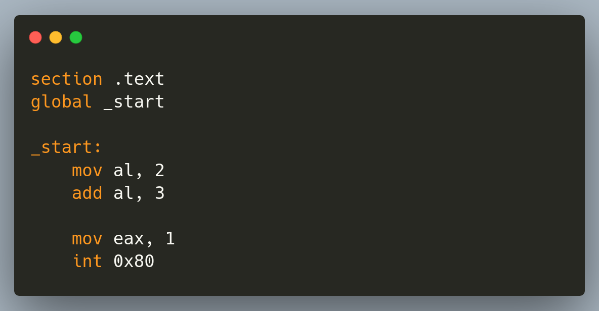
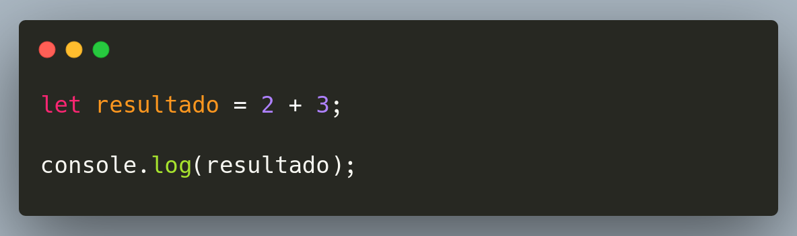

a IA na era das mudanças
"O que é estranho` assusta"
Se a IA consegue gerar software,
vale a pena aprender?
Se a IA consegue gerar software,
vale a pena aprender?
Ensinar a máquina
Ensinar a máquina
Programá-la
E agora também precisamos aprender a trabalhar com quem gera código.

O que esse código faz?

O manifesto de 1983 mudou tudo.
Todo software deve ser livre pra
Software Livre & Código Aberto
Resultado:
"Criamos" a base de toda a internet moderna.
Automatizamos o visual e a estrutura.
2014: "O Web Designer morreu".
Backend x Frontend
Passamos da busca por respostas à conversa com um modelo.
Stack Overflow
ChatGPT
Quem está começando ganhou um tutor disponível a qualquer hora — mas precisa aprender a conferir as respostas.
Desenvolvimento Sugerido (GitHub Copilot).
function calculateRisk(user) {
// IA sugere a lógica baseada no contexto...
}
Automatizamos parte da digitação. Entender e revisar o código continua sendo trabalho nosso.
A IA executa tarefas. O humano define objetivos, limites e critérios.
A sintaxe importa. Mas julgamento, contexto e estratégia importam ainda mais.
| Era | O que ganha força | O que continua necessário |
|---|---|---|
| Cartões e linguagens | Expressar instruções | Lógica e precisão |
| Frameworks | Reutilizar soluções | Entender abstrações |
| IA generativa e agentes | Delegar tarefas | Validar, decidir e assumir responsabilidade |
A gente é pago pra resolver problema, não pra escrever código.
Peça uma funcionalidade. Execute. Teste. Encontre um erro. Questione a solução.
Escolha um problema real.
Construa um projeto pequeno.
Use IA, mas entenda cada decisão.
Apresente o que fez e explique como funciona.
Mas sua jornada não pode ser terceirizada.
Aprenda. Experimente. Questione. Construa.